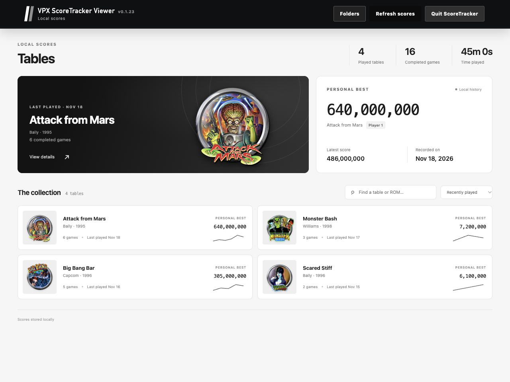
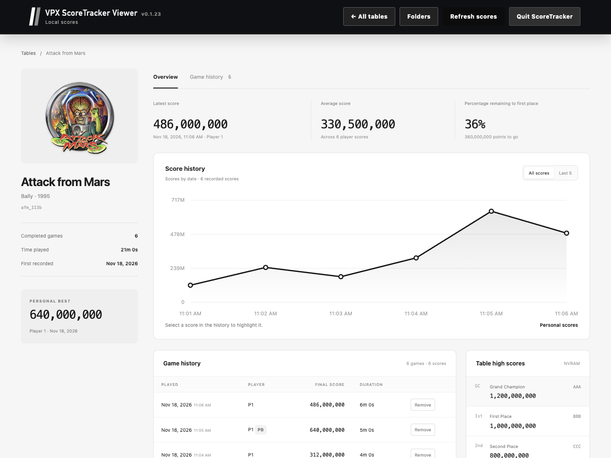

VPX ScoreTracker saves your Visual Pinball X scores locally, with a desktop Viewer for browsing your tables and game history.
Score tracking is made possible by Tom Logic’s pinball-memory-maps project, while VPX integration follows the example provided by jsm174/vpx-sample-plugin.
Download
The plugin and desktop Viewer are separate ZIP downloads.
Checking latest release…
All releases
Install
Install Plugin
- Close Visual Pinball X.
- Extract the
scoretracker/folder from the plugin ZIP into your VPX plugins directory. - Enable ScoreTracker in VPX settings, or add the following to
VPinballX.ini:
[Plugin.ScoreTracker]
Enable = 1
Notifications = 1- macOS
Your VPX app/Contents/PlugIns/scoretracker/- Linux
plugins/scoretracker/inside your VPX installation.
Install Viewer
- Extract the entire Viewer ZIP.
- On macOS, open
ScoreTracker.app. On Linux, openScoreTracker/scoretracker-viewer. - Choose your tables folder. Select your VPX installation to read the table high scores from NVRAM.
Screenshots
VPX ScoreTracker Viewer · example data

